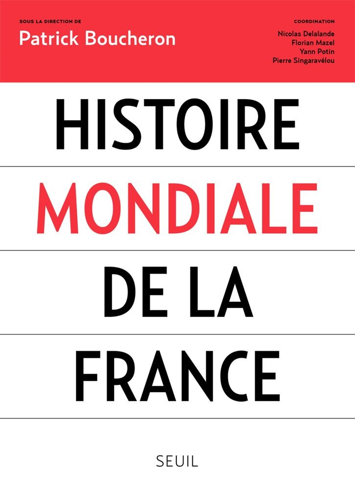
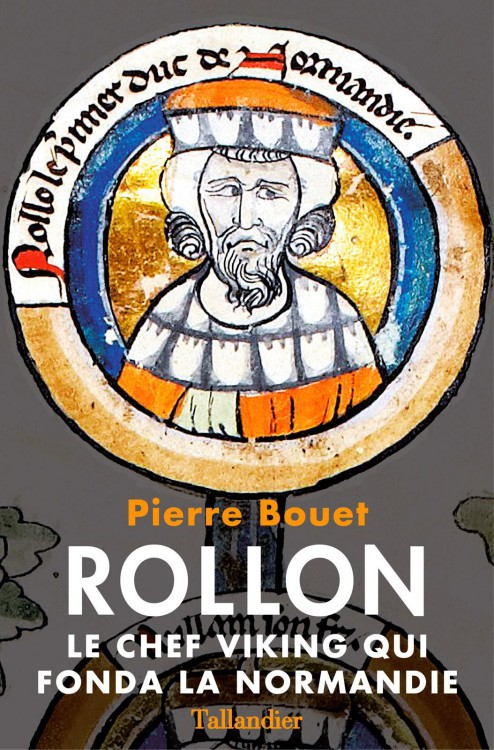
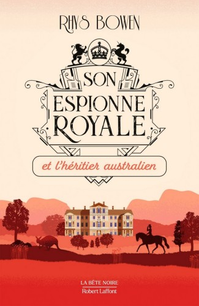
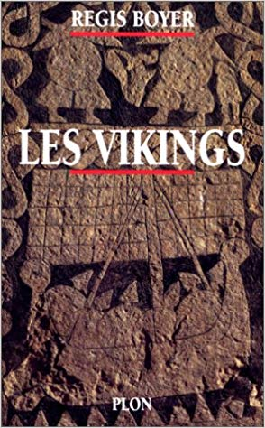

Inkarmations
#science-fiction

Le Dixième vaisseau
#science-fiction

Histoire mondiale de la France
#histoire

Rollon - Le Chef viking qui fonda la Normandie
#histoire
Sociologie générale Vol. 1
#essai
Sociologie générale Vol. 2
#essai
Sur la télévision, suivi de L'Emprise du journalisme
#essai
Les Structures sociales de l'économie
#essai
L'Usage du monde
#récit-de-voyage
Né d'aucune femme
#roman-policier

Son Espionne Royale mène l'enquête
#roman-policier
Son Espionne Royale et le mystère bavarois
#roman-policier
Son Espionne Royale et la partie de chasse
#roman-policier
Son Espionne Royale et la fiancée de Transylvanie
#roman-policier
Son Espionne Royale et le collier de la reine
#roman-policier
Son Espionne Royale et les douze crimes de Noël
#roman-policier

Son Espionne Royale et l’héritier australien
#roman-policier
Et l'Homme créa les Dieux
#essai

Les Vikings - Histoire et civilisation
#essai
L'Homme Illustré
#science-fiction